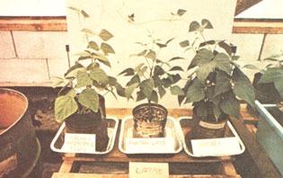
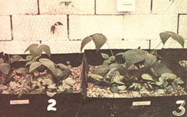
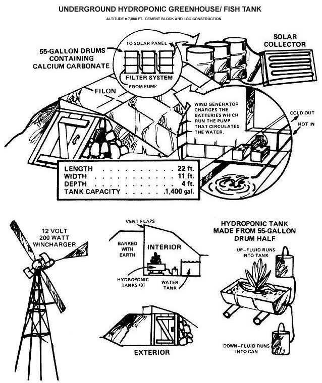

In MOTHER NO. 29, I described in detail a few of the many advantages hydroponic greenhouse gardening has over more conventional methods of raising fruits and vegetables . . . and in response, a reader wrote to MOTHER expressing the following concern:
James DeKorne's information on hydroponics is quite interesting, but one aspect of the method sticks in my craw: The process seems so dead. It'd be fascinating to discover if plants grown hydroponically differ in manifest energy?on some level apart from "nutrients" alone-as compared to those grown in soil . . . .
I've found that this is a common reaction to hydroponic gardening, even though anyone who has had any experience with the concept will tell you immediately that there's nothing at all "dead" about it. On the contrary: The plants I grow in my hydroponic greenhouse seem more alive than their peers out in the garden mostly because of their more rapid growth and prolific production of fruit.
Laboratory tests have shown that there are no nutritional differences between normal vegetables grown hydroponically and those grown in gardens (organic or otherwise). Neither are there any differences in flavor: Last summer my wife took two tomatoes?one from our garden and one from a hydroponic tank in the greenhouse?and arranged them in slices on two separate plates. Only she knew which was which. After every member of the family tasted pieces from each plate, it turned out that no one could detect any differences in flavor . . . none of us could tell which tomato was "organic" and which "hydroponic".
Even so, it is true that the hydroponically grown tomatoes you buy in the supermarket often taste bland and pulpy. One explanation for this?aside from the fact that supermarket produce is of dubious freshness?is that tomatoes produced in commercial hydroponic greenhouses are special hybrids which have been bred for color, uniformity of size, and ability to ripen all at the same time. And these, of course, are qualities which have nothing to do with flavor, but everything to do with the convenience and profit of the agribusinessman who raises the fruit.
No special hybrids for me, though . . . the tomatoes we raise in our tanks are the same varieties we grow in the garden (Burpee Big Boy being our particular favorite).
Nevertheless, not to evade the issue, the reader's letter that I've quoted calls into question something (namely, "manifest energy") for which I have no ready answer . . . if indeed there is one. When we begin to talk about energy levels beyond those that we have instruments to detect, we begin to run up against a semantic impasse. Many organic gardeners, I've noticed, tend to be very mystical about their subject (and for all I know, they may be onto something). I can only say that nothing in my experience confirms?or denies?their esoteric beliefs. If there are differences in the "vibes" given off by hydroponic tomatoes versus those of soil-grown fruit, I cannot detect them.
In previous articles I've given what I consider to be sound ecological reasons for why I am an organic gardener. (The fundamental consideration being that the natural approach offers the only way I know to maintain continuous sod fertility without disastrous side effects.) In my greenhouse gravel tanks, however, I have no reservations about using hydroponic chemicals . . . for one thing, because I've proven to my own satisfaction that there are no nutritional differences whatsoever in vegetables grown by either sod or soilless methods.
The only criticism of hydroponic gardening that I accept as valid is the complaint that hydroponics relies (for the most part) on the use of chemicals which are derived from fossil fuels, or which use vast amounts of these fuels in their manufacture. For that reason, I've recently been working with various organic hydroponic solutions, and have been both surprised and delighted with the results of my very first efforts.
The hydroponic method of growing produce was originally developed as a scientific tool to determine the mineral requirements of plants. Consequently, in its commercial applications, hydroponics has always relied upon pure chemical salts for nutrient solutions. Very little research, however, seems to have been done with organically derived plant food formulas.
Perhaps the most notable work that has been undertaken along these lines was carried out in India. James Sholto Douglas, in his book Hydroponics: The Bengal System ($5.25 from the Oxford University Press, 200 Madison Ave., New York, N.Y. 10016), describes something known as the "Sharder process" which was developed at the Hydroponics and Fish Investigation Unit in Bengal:
Normal beds of aggregate are employed for raising plants, but to supply essential nourishment to crops, manure shells or pots are placed at appropriate intervals along the trough. These consist of earthenware vessels, lined with some kind of sieve or screen, and pierced by a number of tiny holes at the bottoms. The pots are filled with a nutrient sludge or semi-liquid manure, a typical formula for which would be:
Fresh or dried dung, one handful.
Matured oil cakes, four teaspoonfuls.
Alternatively, such materials as hoof-and-bone meal, shoddy (wool waste), and similar plant foodstuffs can be utilized, the exact quantities depending upon their analyses. Dried wood ashes are also fairly good for the purpose . . .
When the manure shells are placed in the hydroponic troughs, and sunk down a few inches into the aggregate, with only the upper portions remaining exposed, they slowly release their nutrient contents into the growing medium. These then become available to the plant's roots as food. Covers should be placed over the vessels, and from time to time they may be refilled with nutrient sludge or topped up. Every three months the beds should be flushed through with plain water to cleanse them . . . .
Another experiment with an organic nutrient solution is briefly described on page 135 of the Portola Institute's Energy Primer ($5.50 from your local bookstore or MOTHER'S Bookshelf, P.O. Box 70, Hendersonville, N.C. 28739). Here, the water from aquaculture tanks is used as a, growth medium:
Finally, associated with each main [fish tank is a hydroponic growing compartment where the culture water from the main tanks (a "soup " of excellent fertilizer) is flushed through gravel beds planted with vegetable crops.
My initial feeling when I read this was that the fish tank effluent probably would not supply an adequate variety of nutrients for the plants' optimum growth. Consequently, to test this assumption I started growing some pinto beans hydroponically, using only the water from my own aquaculture tank as a culture medium.
At first, the bean plants put on amazing growth, rising several inches above some "control" seedlings (which were growing in a commercial nutrient solution). After a couple of weeks, though, the "commercial" beans began to catch up with those receiving only fish tank water . . . and by the end of the month, the fish tank beans which had become pale and sickly in appearance?had all but stopped growing, while the other beans were normal in all respects.
These results seem to parallel those obtained by workers at the U.S. Fish & Wildlife Service's fish farming experiment station in Stuttgart, Arkansas. In the May?June 1975 issue of Aquaculture and the Fish Farmer, investigators Sneed, Allen, and Ellis report on an experiment in which the effluent from a raceway complex containing 10,000 pounds of channel catfish was flushed into hydroponic troughs containing 17 varieties of vegetables. Their results?like mine?were disappointing:
The yield of edible tissue varied widely among different vegetable varieties. Although [all] varieties produced some edible tissue, eleven were of very poor quality and quantity. Three varieties produced average yields and three produced yields considered to be above average for home gardens. The best yields were produced by green peas and cucumbers.
It would seem, then, that people who wish to combine aquaculture with hydroponics should consider using fish tank water as a "starter"?an excellent basic solution in which to germinate seeds or with which to mix other organic materials?but not as a complete plant food by itself.
Lawrence D. Weiss, in the May 14, 1973 issue of The Tribal Messenger, gives us a clue as to how to mix a more complete organic hydroponic solution:
Homemade mixtures of such things as well-rotted compost and animal manure are cheap and ecological. The home farmer can experiment with different such nutrients and strengths in the water base. In this way he or she will find the combination most suitable for his or her plants and installation.
Using both fish tank water and well water, I prepared several different strengths, mixes, and types of organic solutions . in effect, making what is familiar to most organic gardeners as "manure teas". I used these various liquids to grow tomatoes, radishes, lettuce, runner beans, and pinto beans. (Most of the initial experiments were with beans.) At the same time, identical plants received a commercial hydroponic solution (Hyponex, 7-6-19).
At first, I was very "scientific" about everything: For example, I would accurately weigh out 20 grams of rabbit manure per liter of water. I soon realized, however, that such careful measurements weren't really necessary . . . and that moreover?most Americans would not bother to duplicate precise efforts of that nature anyway. (It's hard enough to persuade people to try a new gardening technique without throwing the metric system at them!) So I ended up with the following standard formula:
One small-size Quaker Oats box full of a mixture containing equal parts rabbit manure, chicken manure, earthworm castings (manure), and wood ashes.
One 20-gallon can of well water or fish tank effluent filled to within an inch of the top.
(Note: I can't honestly say I noticed any difference between the results I obtained with well water and those I obtained with fish tank water, although it stands to reason that the latter fluid would contain more nutrients. I purposely avoided rainwater, however, since it's likely to be deficient in the micro-nutrients manganese, boron, etc.?which are almost always present in ground water.)
The organic ingredients were vigorously stirred into the 20 gallons of liquid and then allowed to steep for several days (by which time all the solid particles would settle to the bottom). The resulting liquid?which was the color of a weak cup of tea-was next poured carefully into cans, while fresh water was added to the original container to make a new batch.
We found that we could get several cans of hydroponic fluid from each batch of organic material. From time to time I would add fresh measures of the organic mix to the liquid . . . relying mostly?I must admit?on when it felt right to do so (that is, when the "vibes" were right!).
At first, I very religiously tested the pH of the solutions (pH being a measure of how acid?or alkaline?anything is). All of the hydroponics books really stress the importance of this, since plants will only thrive within certain narrow pH ranges. Experience has shown us, however, that the pH of our solutions both organic and commercial?is nearly always right about where it should be: between 6.0 and 7.0. So we hardly ever even test the pH of our liquid plant foods anymore. You probably will want to analyze yours (at least in the beginning) if you try hydroponics, however, so a short discussion of the subject is, perhaps, in order.
As anyone who's ever had an aquarium knows, a pH test can be performed with a special "indicator" called Nitrazine paper , available from most any drugstore. When you dip a strip of this paper in the fluid being tested, the strip changes color (the final color depending on the exact pH: yellow for strongly acid, blue for strongly alkaline, or several intermediate hues for readings in between). To find the approximate pH of whatever you're testing, you then simply match the color of the paper against a color chart on the side of the container it came in. (If you're unfamiliar with this very simple procedure, don't be alarmed . . . it isn't any big deal.)
Now, if the solution you've tested turns out to be too alkaline, an acid must be added to "balance out" the pH. Likewise, an alkali must be added if the liquid is too acid. Commercial greenhouses, of course, use pure hydrochloric acid or sodium hydroxide to adjust the pH of their nutrient solutions.
Since both of the above chemicals are extremely dangerous, as well as expensive, we've relied?successfully, I might add-on plain old white vinegar (acid) and baking soda (alkali) to alter the pH of our solutions. (All this chemical talk may sound horribly complex, but I assure you there's nothing to worry about. As I mentioned before, we very seldom have to tinker with the pH of our solutions.)
The results of my experiments indicate that almost any organically derived solution will support plant growth. For example, bean plants raised in a solution containing chicken manure alone grew just as well as the same plants raised in the complete complement of manures.
I must also be honest and state that two "control" plants-raised in pure worm castings, with no water at all?grew just as well as any of the hydroponic plants, including those which received the commercial solution. (This may provide an alternative for those who object to the hydroponic concept.)
In general, vegetables raised in the commercial solution grew slightly faster than the organic?solution plants, but not significantly so. Actually, the most striking difference between the two was that the organic?solution plants did not wilt during the hottest part of the day, while plants raised with the commercial solution almost always wilted! (We observed this phenomenon on a daily basis, so it isn't a figment of our imaginations.) Bear in mind that all the plants were being raised in a greenhouse, and that during the time of the experiment summer of 1975?the inside temperatures often went over 100° F conditions which would make any self-respecting plant wilt! Within five minutes of being fed the organic nutrient solution, however, all wilt symptoms disappeared (the same as when you water wilting plants in the garden or in pots).
It isn't possible, of course, to explore exhaustively the subject of organic hydroponic techniques in these pages. A complete treatment of this matter will appear in our forthcoming ecosystem book. What I've outlined here, though, should be enough to get you started. There are many, many experiments yet to be made and different nutrient solutions yet to be tried. We feel we've only just begun.
Lawrence Weiss, in The Tribal Messenger, pretty well sums up the way it is with this fascinating field: "Remember that there is no 'correct way' to do anything in hydroponic farming. Experiments and experience will always be your best guides. One reason hydroponic farming is so much fun is [that] everyone does it differently."
The marriage of aquaculture with hydroponics is a "natural" . . . or so it would seem. As James DeKorne points out, however, plants raised hydroponically in fish tank effluent seldom grow very well.
Why? Author DeKorne hints at one possible answer when he suggests in his article that aquaculture runoff be used as a starter fluid "not as a complete plant food by itself". The implication, of course, being that fish tank water alone won't support plant growth because it doesn't contain all the nutrients that plants need.
Maybe that's true. Maybe not. In any case, we shouldn't overlook another (equally plausible) explanation: namely, that vegetables do not thrive in aquaculture effluent because the liquid contains growth inhibitors. It is well known, for instance, that fish closely confined in tanks frequently will not grow beyond a certain size-no matter how much they're fed?because of growth inhibitors which they themselves secrete. Perhaps some of these inhibitors can also affect the growth and development of plants. The idea, we feel, should at least be researched.
|
 Author's attempt to combine aquaculture withhydroponics was not 100% successful. Effluent-grownbeans?which at first rose inches above beans raised ineither manure tea or commercial nutrient solution?later became stunted and pale. |
 Below: Proof that organic hydroponics works. Beans onleft were raised in a water extract of rabbit manure,chicken manure, earthworm castings (manure), andwood ashes . . . while plants on right received Hyponexcommercial nutrient solution. |
 Shown here are details of author's underground ecosystem, in which earthworms are raised to feed to fish and fish tank water is used to grow hydroponic vegetables. The only material that's brought in from outside is compost for the worms. |